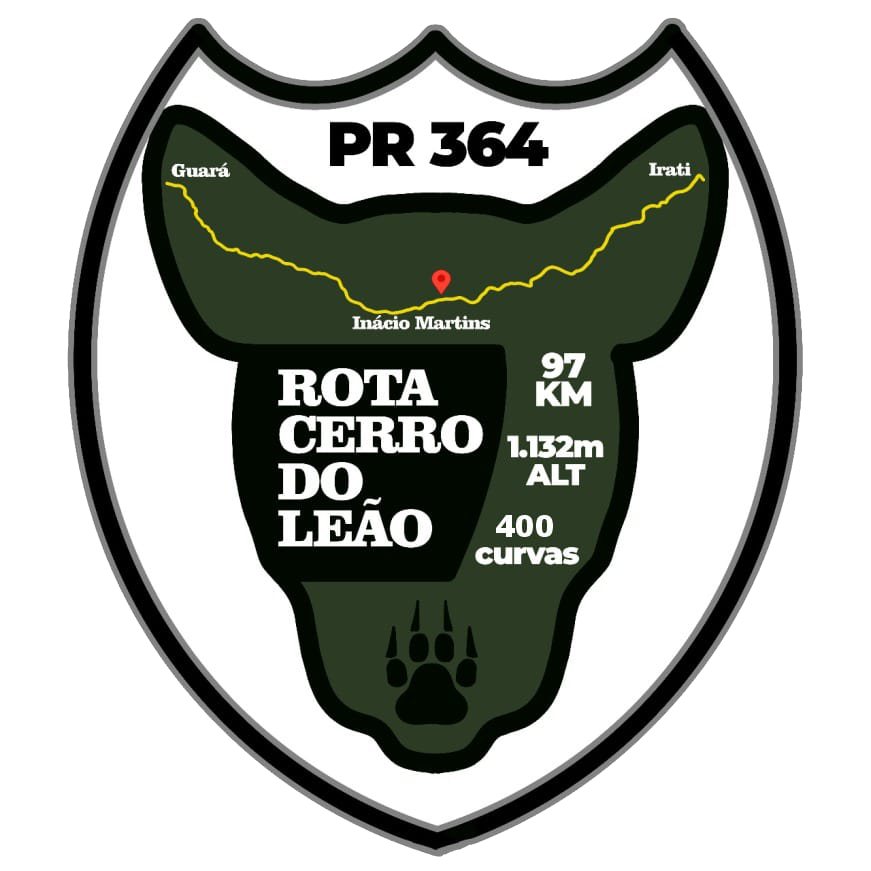

Quem somos:
Quem somos:
Rota destinada à pratica de mototurismo no interior do Paraná, com diversos pontos turisticos, restaurantes, cafés e mais!
Rota destinada à pratica de mototurismo no interior do Paraná, com diversos pontos turisticos, restaurantes, cafés e mais!
Nos séculos XVIII e XIX, os tropeiros conduziam suas tropas de gado entre os Campos Gerais e Guarapuava, na região de Laranjeiras do Sul.
Durante essa jornada, eles contornavam o que hoje conhecemos como o Cêrro do Leão. Devido à altitude do local, os tropeiros escolhiam acampar ali com o gado. No entanto, à noite, os leões-de-cara-suja, que habitavam a região, afugentavam o gado.
Com o tempo, os tropeiros compartilhavam informações sobre a presença desses leões com outros grupos que transitavam pela área. Essa comunicação oral levou ao nome “Cêrro do Leão”.
Próximo da divisa entre Irati e Inácio Martins, nos Municípios do Paraná.
Latitude: -25,5667° ou 25° 34' sul
Longitude: -51,0167° ou 51° 1' oeste
Altitude: 1.132 metros (3.714 pés)